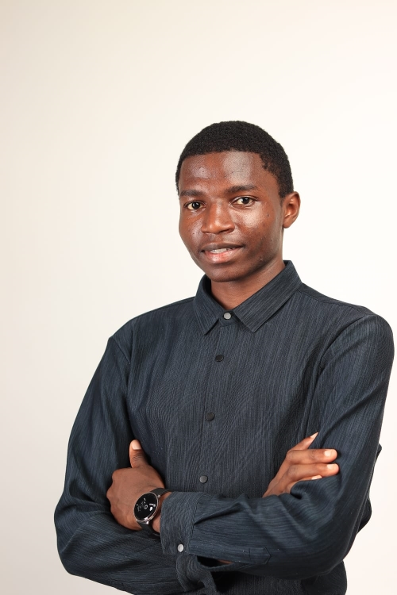

I turn biological and business data into decisions — combining bioinformatics analysis with data analytics, and currently deepening my skills in data science.
I'm a data analyst and bioinformatics enthusiast based in Kenya, with a foundation in biological sciences and a growing skill set in data analytics and data science. I enjoy working at the intersection of biology and computation — analyzing genomic and biological data with the same rigor I bring to business and analytics datasets. I hold ALX certifications in Data Analytics and Virtual Assistance, and I'm currently building out my data science skills to take on more advanced analytical work.
Genome analysis project on Fusarium oxysporum f. sp. cubense Tropical Race 4 (FOC-TR4), the pathogen behind Panama disease in banana.
Analyzed 909 clinical Klebsiella pneumoniae isolates from Kenya (NCBI Pathogen Detection, 2022-2026) to identify the most common antimicrobial resistance genes, reporting trends over time, and geographic distribution. Found that ~83% of isolates carry blaCTX-M-15, a gene linked to resistance against common first-line antibiotics.
Analyzed 4,086 clinical isolates across three organisms (E. coli, Klebsiella pneumoniae, Salmonella enterica) from Kenya, combining resistance gene profiling, a Random Forest model predicting MDR status, a gene co-occurrence network revealing plasmid-driven multi-drug resistance, and an interactive Streamlit dashboard.
Open to opportunities in data analysis and bioinformatics — feel free to reach out.